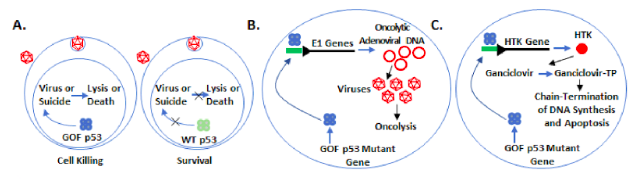
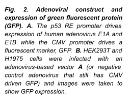
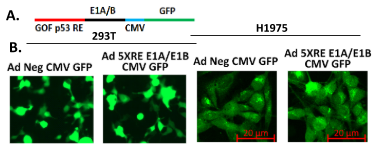

Dr. Sumitra Deb
Dr Deb's research area.
Sumitra Deb, PhD
The major research interest of our laboratory is to understand the molecular biology of cellular proliferation and its control, how that get altered in cancer and how we can use the altered properties to our advantage in targeting cancer cells. In this regard, we are currently focusing on understanding the molecular biology of the human tumor suppressor p53 and how mutations in p53 lead to cancer. Mutation in the p53 tumor suppressor gene is a common event in human cancer and in most human carcinomas containing p53 mutations the mutant protein is over-expressed suggesting the existence of a selection pressure to maintain expression. Most of these mutations are single amino acid changes instilling gain-of-function (GOF) oncogenic phenotypes in cells. We are one of the first two groups to show the GOF mutant p53 can transactivate expression of oncogenic genes. We identified a response element (RE) for transactivation by GOF p53 (not wild-type, WT p53) demarcating normal cells and cancer cells with GOF mutant p53. This discovery provides us with tools to identify cancer cells with GOF p53 using a novel GOF mutant p53 responsive promoter. We are working on the following concurrent projects:
1) By dissecting the critical elements of promoters that interact with GOF mutant p53, we created a vector in which a customized promoter that is specifically activated by GOF mutant p53. This promoter is used to drive expression of reporter genes, leading to fluorescence and luminescence generating a tool to allow us to easily detect GOF p53 activity in living cells, detect cells that acquire a GOF p53 mutation, and quantify mutant p53 inhibition. We call this tool the GOF p53 Beacon System and are using this to identify small molecule inhibitors/modulators and cellular modulators of the mutant p53 pathways. We are also developing a mouse with the GOF p53 Beacon System for detecting acquisition of p53 mutations in pre-cancerous and cancerous cells in a living mouse. We propose to utilize this system for purifying mutant p53 cancer cells from the mouse at varying stages from when the tumors are small, less evolved, and may have fewer mutations, to later stages to assess the genetic evolution. Purifying mutant p53 cancer cells at a stage shortly after acquisition of the p53 mutation may also shed light on the study of stem cell like properties.
2) Mutant p53 REs that activate oncogenic genes can be used to drive a synthetic promoter to specifically express a suicide gene, such as Herpes Simplex Virus 1 Thymidine Kinase (HTK) or bacterial cytosine deaminase (bCD) gene in cancer cells with endogenous GOF p53, killing the cells in presence of the corresponding prodrug [ganciclovir (GCV) or 5-fluoro cytosine (5-FC)]. We plan to eliminate cancer cells with GOF p53 using the novel approach of expressing a suicide gene by a synthetic GOF p53 responsive promoter. We will test if lung cancer cell lines, cells from fresh tumor samples, and lung tumors in mice can be eliminated by using recombinant adenoviruses expressing suicide genes under control of a GOF p53 responsive promoter that does not respond to WT p53 keeping normal cells unharmed.
3) We will build an oncolytic adenovirus that replicates in and lyses only lung cancer cells with GOF p53. A fluorescently tagged adenoviral vector (Figure 2) expressing the GOF p53 inducible E1A and E1B genes will be constructed and assessed for its ability to go through the lytic cycle in cells expressing GOF p53, keeping cells with WT p53 (e.g., normal cells) or no p53 unharmed (Figure 1). We will investigate our GOF p53 specific oncolytic virus for tumor elimination. An adenovirus with E1A/E1B under a GOF p53 RE promoter will be investigated for its ability to eliminate preformed tumors from GOF p53-expressing cells. The efficacy and specificity of this virus will be evaluated using (a) lung cancer cell xenograft tumors in mice and (b) patient-derived xenografts (PDX) in mice expecting that all infected GOF p53-expressing cells will die from the virus and cells with WT or null p53 will be unaffected. Effective progress of the work will open a new direction of therapy to treat lung and other cancers with GOF p53. Since p53 mutation affects about 50% of all cancers this could represent a dramatic advance in therapy.